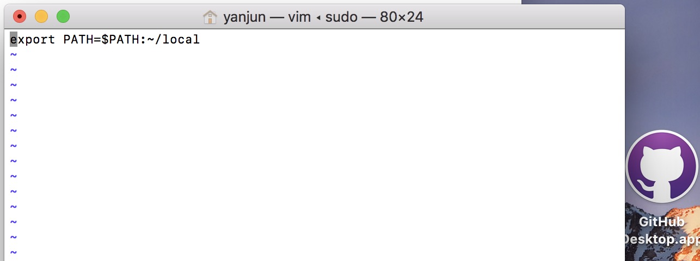

在计算机领域，脚本是指计算机按照文本内容执行指令。接下来我会分别以bash和node两种环境分别编写脚本完成新建文件夹及文件夹下文件。
一、基础配置
在开始编写脚本之前，我们需要完成几个基础配置工作，默认以Mac OS系统为例；
1、修改环境变量
1）打开终端，直接输入echo $PATH则会输出当前系统的所有PATH值，如下图所示
2）继续在终端输入：sudo vi ~/.bash_profile，按回车后输入开机密码，切记一定要使用sudo，否则文件编辑后无法保存，输入完成后会直接打开.bash_profile的编辑页面，并输入”export PATH=$PATH:~/local”，如下图所示：

3）编辑完成后多按加下esc，然后输入光标会自动定位到当前编辑器的最底部一行，输入!wq，保存并退出。在这之前，确保在~/local文件夹存在。
4）然后关闭终端，再次打开，输入 echo $PATH，如下图所示
2、打开终端时默认定位到桌面
在mac系统中是不分硬盘的，一般情况下我们都是直接操作Desktop下的目录，然而默认情况下终端是直接打开的用户目录，即/Users/yanjun目录。为了便于操作，能够在打开终端的时候直接定位到桌面，需要进行以下配置：1
2
3
4
5cd ~ //打开终端，进入用户目录
ls -la //查看列表中是否有.bashrc文件
touch .bashrc //如果无.bashrc，则新建一个
open .bashrc //在文本编辑器中打开.bashrc文件进行编辑，并输入cd ~/Desktop保存后退出
//关闭终端再次打开，直接进入Desktop目录
在此需要说明一个问题，在做完上述操作后，打开终端并没有直接定位到Desktop目录，经查是因为Mac的终端是打开了一个login shell，也就是意味着这里读取了~/.bash_profile，没有读取~/.bashrc。要让打开终端时也读取~/.bashrc，需要在~/.bash_profile当中加入”[[ -s ~/.bashrc ]] && source ~/.bashrc”，如下图所示：

3、配置tree命令
tree命令是能够在终端树形展示文件夹结构的命令，比较好用但是在Mac中需要配置。
打开~/.bashrc文件输入alias tree=”find . -print | sed -e ‘s;1*/;|;g;s;|; |;g’”即可。保存退出，再次打开终端即可使用tree命令。

在以上配置都完成后我们可以开始进行脚本的编写啦。
二、脚本编写
在基础配置中，我们已经完成了系统路径的增加，路径为/Users/yanjun/local。
1、bash脚本编写
1 | cd ~/local //打开文件夹 |
继续以上操作，打开demo.txt文件后，输入以下代码：
保存退出，在终端输入：ls -la查询所有文件的详细信息，如下：
可以看到demo.txt最左侧的属性与ls有不同之处，其中r->read,w->write,x->可执行（对应英语应该是execute,有待确认），demo.txt没有x属性，所以bash不能执行此脚本，那么需要我们在命令行中输入1
2
3chmod +x demo.txt
cd ~/Desktop //切换到桌面
demo.txt //即可在桌面生成demo文件夹及其目录文件
2、bash脚本扩展
1）上述方法可以完成新建demo目录，但是灵活行较差，我们希望能够自定义文件名称，此时可以将demo.txt修改如下：
其中$1代表我们在定义函数时的形参，切换到桌面，输入demo xxx，即可在桌面目录生成xxx文件夹及其目录文件。
2）那么问题又来了，如果桌面已经存在相同名称的文件夹改如何处理？
我们需要在新建目录之前去判断当前目录是否已经存在，具体语法为：
3)如果需要在文件中添加一些内容的话，可以尝试着修改脚本为：1
2
3
4
5
6
7
8
9
10
11
12
13
14if [ -d $1 ]; then
echo "$1 文件夹已经存在"
exit
else
mkdir $1
cd $1
mkdir css js
touch index.html css/style.css js/main.js
echo "<!DOCTYPE><title>Hello</title><h1>Hi</h1>" >> index.html
echo "h1{color:red;}" >> css/style.css
echo "var string = \"Hello World\" alert(string)" >> js/main.js
echo "创建成功"
exit
fi
3、node脚本编写
Bash命令行中输入的是bash命令，在nodejs命令行中输入的是js命令（输入ctrl+d退出node命令行）；
1）nodejs命令行语句与bash命令行语句对比，首先需要在终端输入node以进入node命令行1
2
3process.cwd() //bash命令：pwd
console.log(process.cwd()) //bash中的echo相当于node中console.log()
process.chdir("/Users/yanjun/Desktop") //cd ~/Desktop
2)在~/local目录下创建jsdemo.js文件，内容如下：1
2
3
4
5
6
7
8
9
10
11
12
13
14var fs = require('fs')
var dirName = process.argv[2] // 你传的参数是从第 2 个开始的，在执行的时候是使用node ~/local/jsdemo.js xxx，其中xxx为第二个参数
fs.mkdirSync("./" + dirName) // mkdir $1
process.chdir("./" + dirName) // cd $1
fs.mkdirSync('css') // mkdir css
fs.mkdirSync('js') // mkdir js
fs.writeFileSync("./index.html", "<!DOCTYPE><title>Hello</title><h1>Hi</h1>")
fs.writeFileSync("css/style.css", "h1{color:red;}")
fs.writeFileSync("./js/main.js", "var string = \"Hello World\" alert(string)")
process.exit(0)
保存退出后，仍旧需要给脚本文件加上可执行属性，即在终端输入chmod +x ~/local/jsdemo.js
3)优化
每次执行node脚本都需要先进入node环境，如何简化这一步骤呢，我们可以在jsdemo.js的首行插入：1
2
3
4#!/usr/bin/evn node //shebang语句，指定当前脚本执行环境
~/local/jsdemo.js xxx //可以直接运行
jsdemo.js xxx //如果local已经加入到环境变量中即可运行
jsdemo xxx //删掉后缀.js仍旧能后运行
ok，这样就大功告成。